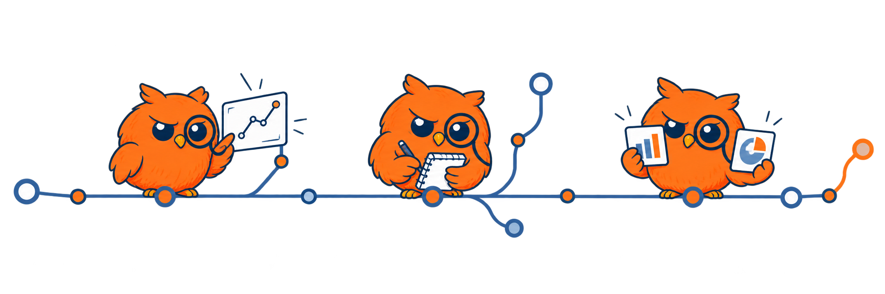

KURZ / CHANGYM963
Financial AI, thoughtfully built.
I study how AI systems make decisions: fairly, independently, and under real-world constraints. I turn those questions into runnable research demos and practical tools.

Selected research
MAI
Independent reasoning in a crowd. A context-adaptive framework for measuring majority-alignment drift and decision reliability in financial multi-agent LLM systems.
Multi-agent behavior · Evaluation · Interventions
Explore project → · Methods · Reproducibility
FinFair
Fairness under real constraints. A research demo exploring demographic robustness, counterfactual invariance, and lightweight financial decision models.
Financial AI · Robustness · Lightweight deployment
Tools & experiments
- Gemini Web Shell · An unofficial Electron desktop wrapper for Gemini Web
- GitHub Followers Search · A local follower search utility with keyword and fuzzy matching
- Transformers Code · A fork for hands-on Transformers practice, fine-tuning, and PEFT
Working stack
Research · Python / PyTorch / Transformers / PEFT / Datasets / Accelerate
Building · Electron / Node.js / GitHub API
More experiments & GitHub activity
MAI Herding Test is a compact demo of financial multi-agent herding evaluation.